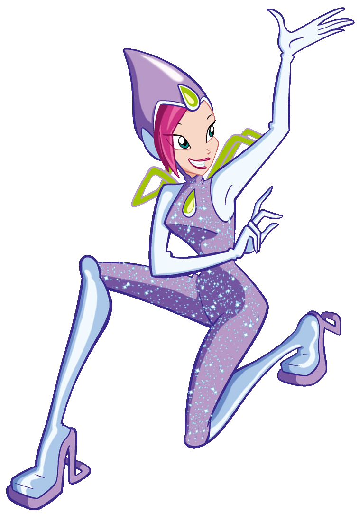

Tecna, a fada da tecnologia
Fada guardiã de Zenith, planeta onde a magia vem da tecnologia!
Idade: 16 anos
Aniversário: 16 de Dezembro
Biografia:
Tecna nasceu em Zenith, capital da tecnologia da Dimensão Mágica, seus pais são Elctronio e Magnethia, dois cientistas especializados em equipamentos não-usuais. Desde muito jovem ela viveu rodeada de equipamentos eletrônicos e tecnomágicos, o que claramente é esperado de jovens nascidos no planeta da magia digital. Como era costume dos habitantes de Zenith ela não expressava muito suas emoções, deixando-as reclusas no seu interior, mas quando conheceu as amigas sua personalidade mudou. Ao logo da série Tecna se mostra cada vez mais preocupada em demonstrar o quanto preza pela amizade e sempre tenta mudar. Tecna é extremamente inteligente, com um QI de 150, e ama tecnologia. Tem dificuldade em expressar suas emoções, e baseia a maioria de suas decisões na lógica pura. Ama a ciência, experimentando, em seu tempo livre, a criação de inúmeros dispositivos tecnológicos. Ela também tem uma memória fotográfica, adora computadores e jogos eletrônicos.
Poderes:
Os poderes de Tecna vem da tecnologia, além de sua memória fotográfica. Ela tem o foco de seus poderes na sua inteligência e habilidades tecnológicas.
Curiosidades:
1.Tecna divide o quarto com Musa, a fada da música e a sua melhor amiga.
2.Vive brigando com Stella, já que a outra não usa muito a lógica, fala muito e leva muito a sério a moda.
3.A sua Pixie é Digit, a Pixie da nanotecnologia.